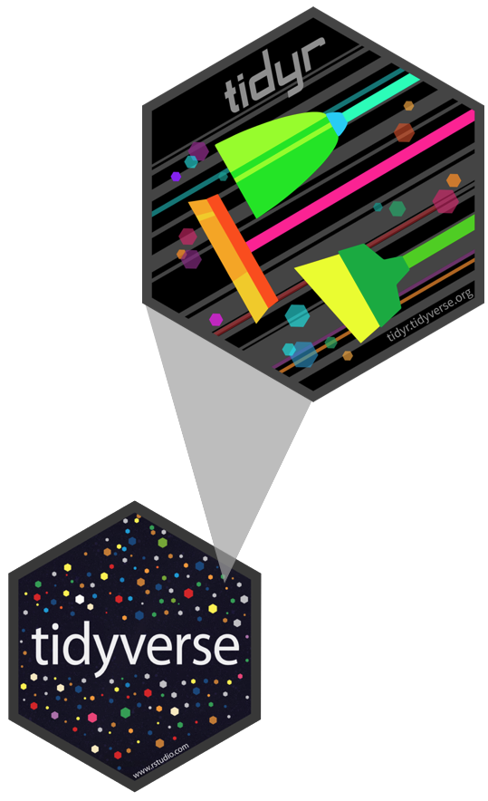
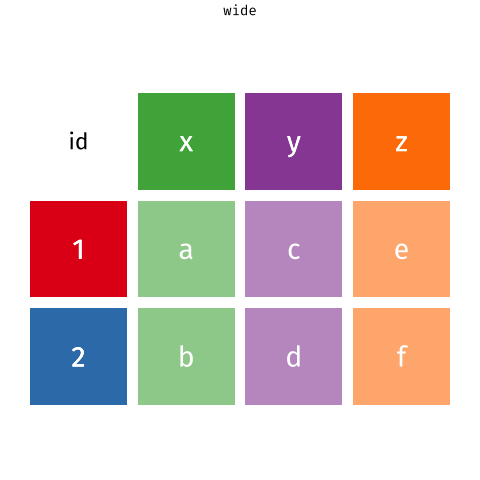

library(tidyverse)Tidying data
Data tidying and importing
Setup
Task, goal, and tools
have data organised in an unideal way for our analysis
. . .
want to reorganize the data for our analysis
. . .
using tools from the tidyverse
Data: Grocery store sales
have
# A tibble: 2 × 4
customer_id item_1 item_2 item_3
<dbl> <chr> <chr> <chr>
1 1 bread milk banana
2 2 milk toilet paper <NA> want
# A tibble: 6 × 3
customer_id item_no item
<dbl> <chr> <chr>
1 1 item_1 bread
2 1 item_2 milk
3 1 item_3 banana
4 2 item_1 milk
5 2 item_2 toilet paper
6 2 item_3 <NA> Grammar of data tidying

The goal of tidyr is to help you tidy your data via
- pivoting for going between wide and long data
- splitting and combining character columns
- nesting and unnesting columns
- clarifying how
NAs should be treated
Pivoting data
Pivoting
Not this…

but this!

Wider vs. longer
wider - more columns
# A tibble: 2 × 4
customer_id item_1 item_2 item_3
<dbl> <chr> <chr> <chr>
1 1 bread milk banana
2 2 milk toilet paper <NA> longer - more rows
# A tibble: 6 × 3
customer_id item_no item
<dbl> <chr> <chr>
1 1 item_1 bread
2 1 item_2 milk
3 1 item_3 banana
4 2 item_1 milk
5 2 item_2 toilet paper
6 2 item_3 <NA> From wider to longer
pivot_longer()
pivot_longer(
data,
cols,
names_to = "name",
values_to = "value"
)pivot_longer()
pivot_longer(
1 data,
cols,
names_to = "name",
values_to = "value"
)- 1
-
data(as usual)
pivot_longer()
pivot_longer()
pivot_longer()
- 1
-
data(as usual) - 2
-
cols: Columns to pivot into longer format - 3
-
names_to: Name of the column where column names of pivoted variables go (character string) - 4
-
values_to: Name of the column where data in pivoted variables go (character string)
pivot_longer() in context
customers |>
pivot_longer(
cols = item_1:item_3,
names_to = "item_no",
values_to = "item"
)# A tibble: 6 × 3
customer_id item_no item
<dbl> <chr> <chr>
1 1 item_1 bread
2 1 item_2 milk
3 1 item_3 banana
4 2 item_1 milk
5 2 item_2 toilet paper
6 2 item_3 <NA> pivot_longer() in context
customers |>
pivot_longer(
1 cols = item_1:item_3,
names_to = "item_no",
values_to = "item"
)- 1
-
colsto pivot:item_1toitem_3
pivot_longer() in context
pivot_longer() in context
pivot_longer() in context
customers |>
pivot_longer(
cols = item_1:item_3,
names_to = "item_no",
values_to = "item"
)# A tibble: 6 × 3
customer_id item_no item
<dbl> <chr> <chr>
1 1 item_1 bread
2 1 item_2 milk
3 1 item_3 banana
4 2 item_1 milk
5 2 item_2 toilet paper
6 2 item_3 <NA> Dealing with NAs
customers |>
pivot_longer(
1 cols = item_1:item_3,
2 names_to = "item_no",
3 values_to = "item",
4 values_drop_na = TRUE
)- 1
-
colsto pivot:item_1toitem_3 - 2
-
Column
names_tonew column calleditem_no - 3
-
values_tonew column calleditem - 4
-
Drop rows that contain only
NAs in thevalues_tocolumn
# A tibble: 5 × 3
customer_id item_no item
<dbl> <chr> <chr>
1 1 item_1 bread
2 1 item_2 milk
3 1 item_3 banana
4 2 item_1 milk
5 2 item_2 toilet paperFrom customers to purchases
purchases <- customers |>
pivot_longer(
cols = item_1:item_3,
names_to = "item_no",
values_to = "item",
values_drop_na = TRUE
)
purchases# A tibble: 5 × 3
customer_id item_no item
<dbl> <chr> <chr>
1 1 item_1 bread
2 1 item_2 milk
3 1 item_3 banana
4 2 item_1 milk
5 2 item_2 toilet paperWhy pivot?
Most likely, because the next step of your analysis needs it
. . .
prices# A tibble: 5 × 2
item price
<chr> <dbl>
1 avocado 0.5
2 banana 0.15
3 bread 1
4 milk 0.8
5 toilet paper 3 purchases |>
left_join(prices)Joining with `by = join_by(item)`# A tibble: 5 × 4
customer_id item_no item price
<dbl> <chr> <chr> <dbl>
1 1 item_1 bread 1
2 1 item_2 milk 0.8
3 1 item_3 banana 0.15
4 2 item_1 milk 0.8
5 2 item_2 toilet paper 3 From longer to wider
From purchases to customers
purchases |>
pivot_wider(
names_from = item_no,
values_from = item
)# A tibble: 2 × 4
customer_id item_1 item_2 item_3
<dbl> <chr> <chr> <chr>
1 1 bread milk banana
2 2 milk toilet paper <NA> pivot_wider()
pivot_wider(
1 data,
names_from = name,
values_from = value
)- 1
-
data(as usual)
pivot_wider()
pivot_wider()
- 1
-
data(as usual) - 2
-
names_from: Which column(s) in the long format contains what should be column names in the wide format - 3
-
values_from: Which column(s) in the long format contains what should be values in the new columns in the wide format
Wider <-> longer
Additional arguments
pivot_longer(
data,
cols,
...,
cols_vary = "fastest",
names_to = "name",
names_prefix = NULL,
names_sep = NULL,
names_pattern = NULL,
names_ptypes = NULL,
names_transform = NULL,
names_repair = "check_unique",
values_to = "value",
values_drop_na = FALSE,
values_ptypes = NULL,
values_transform = NULL
)pivot_wider(
data,
...,
id_cols = NULL,
id_expand = FALSE,
names_from = name,
names_prefix = "",
names_sep = "_",
names_glue = NULL,
names_sort = FALSE,
names_vary = "fastest",
names_expand = FALSE,
names_repair = "check_unique",
values_from = value,
values_fill = NULL,
values_fn = NULL,
unused_fn = NULL
)